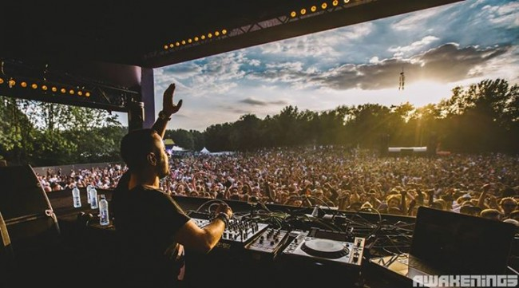
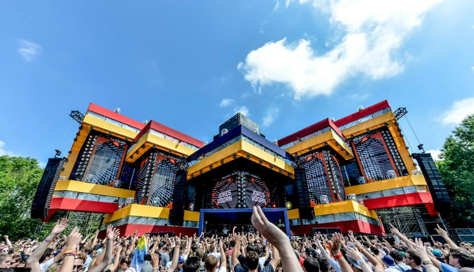
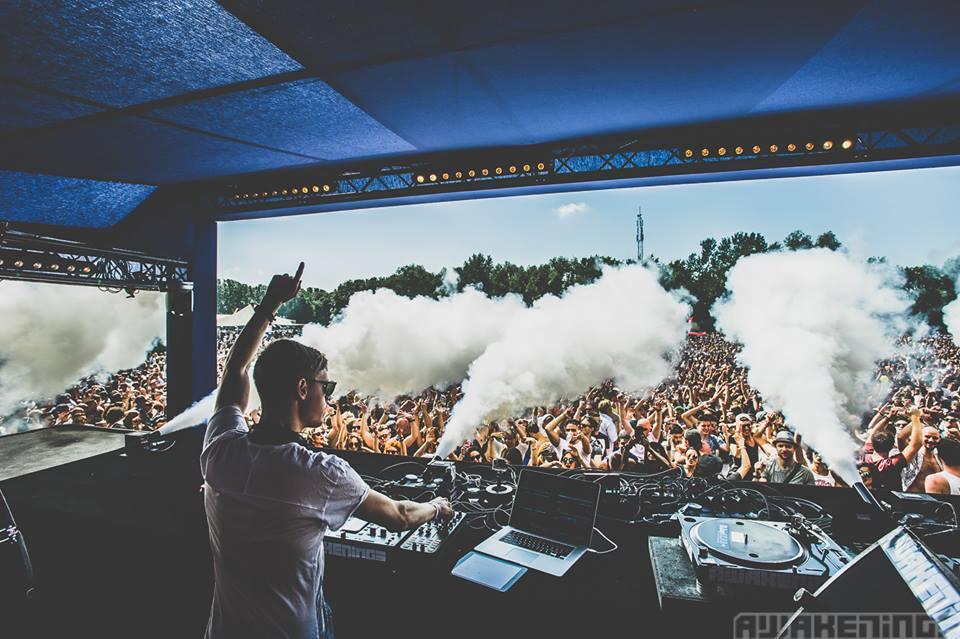
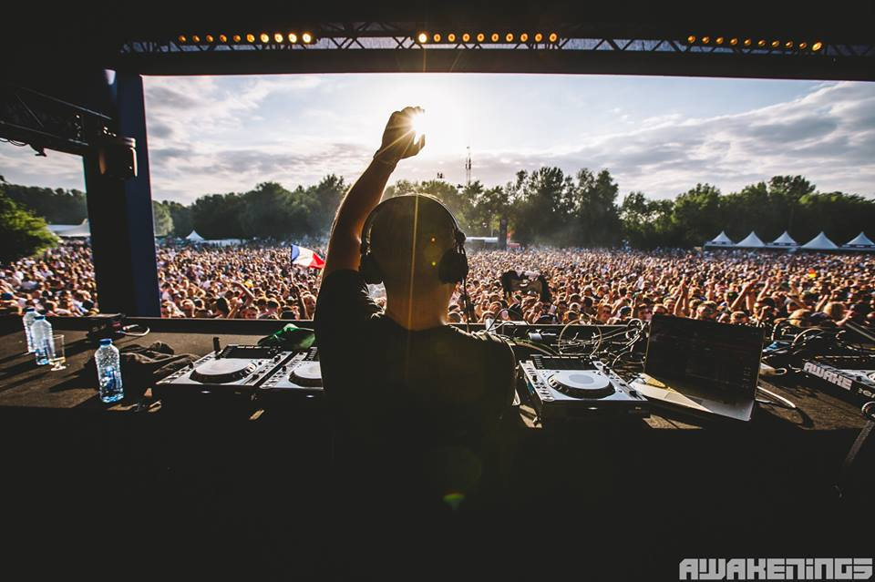
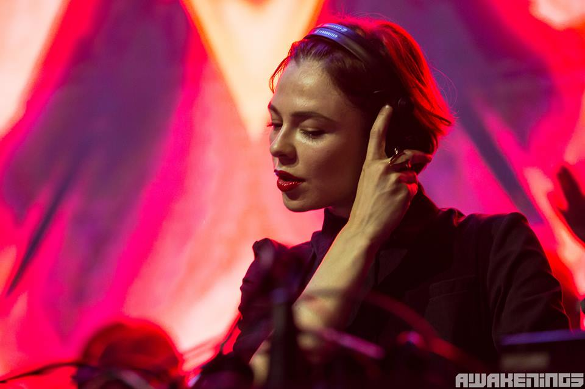
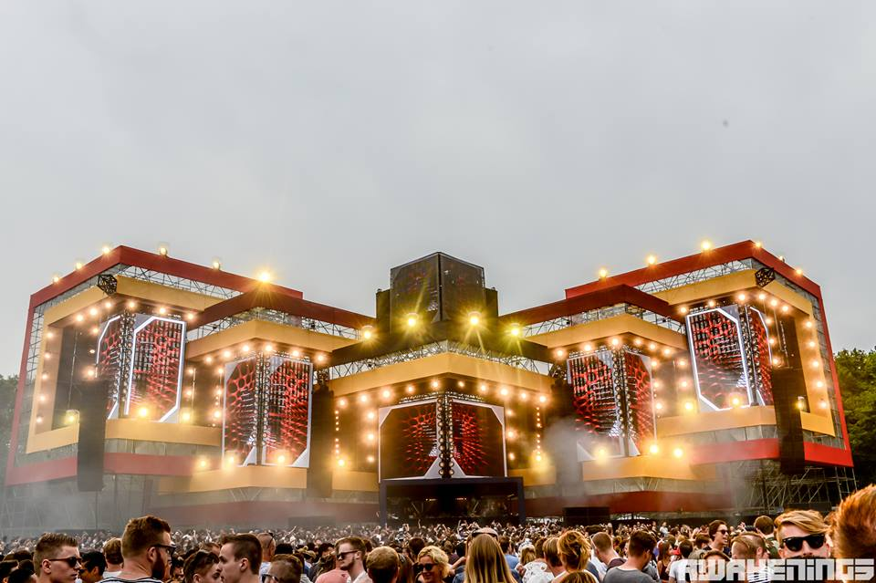
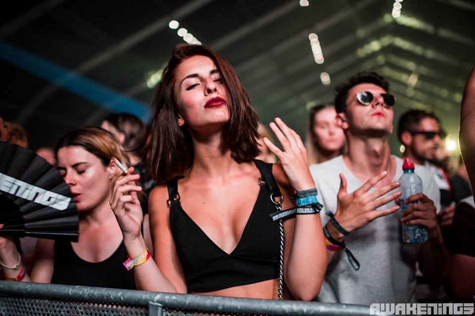
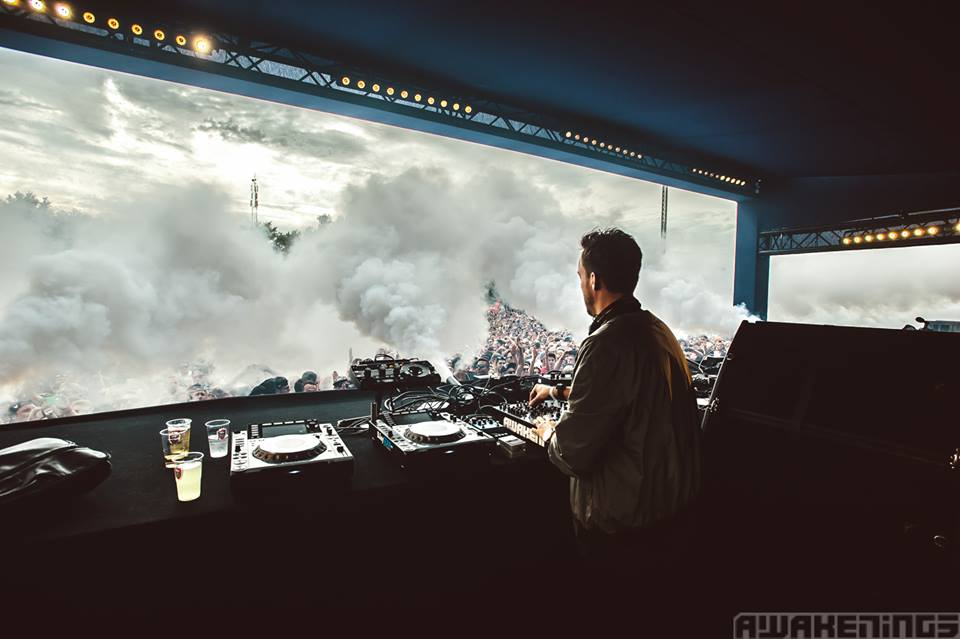
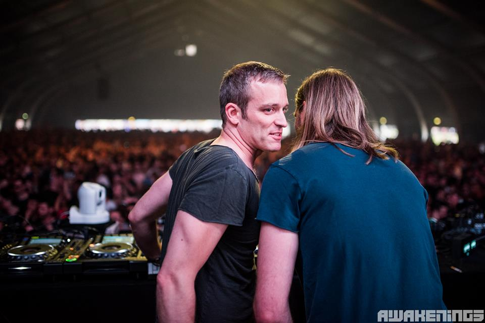
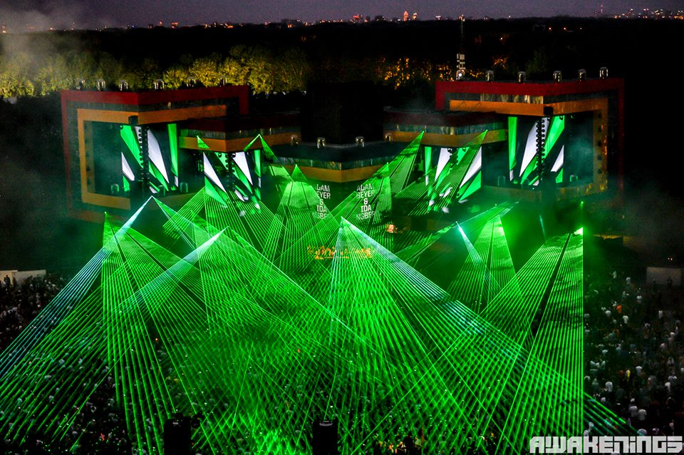

20 Tracks That Ruled Awakenings Festival 2015
{kind=link}

The Awakenings brand is one of the true mainstays of the Dutch techno scene. While it regularly sells out spectacular indoor parties at Amsterdam’s Gashouder venue throughout the year, the real goliath is its two-day outdoor festival in late June. Celebrating its 15th anniversary in 2015, the scale and spectacle of the Awakenings Festival is still astounding.
Taking place across the grassy terrain and pristine lakes of the Spaarnwoud Houtrak just outside Amsterdam, Awakenings Festival hosts eight different outdoor and tent arenas, all which boast high production standards: elaborate stage designs, punchy sound, spectacular lighting and lasers, and attention to detail in every direction.
It’s also complemented by arguably the most top-heavy selection of techno DJs you’ll find at any event in the world. Just taking a glance at the timetable over the two days is enough to make a techno fan’s jaw drop. The 2015 schedule featured more than 100 artists from across the spectrum (along with a dash of house), with many of the genre’s heavyweights playing twice over the weekend – plus mammoth brands like Drumcode, Minus and Electric Deluxe curating their own stages. And while ‘techno’ is certainly the operative word, it doesn’t do justice to the variety of sounds you’ll hear.
The icing on the cake is how much the Dutch really do love their hard techno. Awakenings Festival is packed with tens of thousands of (impossibly good looking) people who are all there to party, and take the experience for all that it’s worth; it’s also one of the world’s most up-for-it crowds you’ll find anywhere in the world.
Two full days of techno heavy-hitters across eight different arenas equates to a whole lot of music, and as such, it’s too sprawling to ever properly put into words. Nevertheless, we hit the festival to tally up the tracks that defined the Awakenings Festival marathon in 2015.
SATURDAY
{kind=link}

Wat Dada – “Mid West” (Original Mix) [Apparel Music]
Awakenings Festival sported two equally massive open-air mainstages, at the north and south of the festival grounds; with each boasting stage design elaborate enough to rival some of the biggest EDM festivals. The mainstage to the north was adorned with rows of huge metal studs and vast LED panels, and was already hosting the big names by early afternoon on the Saturday, with Luciano’s early set followed by an appearance by Loco Dice, who kept the energy appropriately restrained in groovy techno mode. “Mid West” from Italian duo Wat Dada has been a mainstay in his sets for a few years, and it appropriately represents how Dice warmed up those party vibes on Saturday.
{kind=link}

Royksopp – “I Had This Thing” (Joris Voorn Remix) [Green]
Meanwhile over at the mainstage to the south, Awakenings regular Joris Voorn took to the stage for a low-key two-hour set; a prelude to hosting his own arena on Sunday. At this end of the festival, the stage design was just as elaborate, a giant triangular formation with its angular edges reaching out around the crowd, the DJ booth placed right in the center of the triangle. Like Dice, Voorn took a restrained path with selections that favored melodic tech-house, though he unleased a dash of euphoria an hour in with his own emotive remix of “I Had This Thing.”
Following Voorn at Area C was the techno don himself Sven Väth, playing his first mainstage set for the weekend. You can generally expect a set full of wonky, tripped-out vibes from Väth, and this recent record from Gary Beck suited him perfectly, full of stomping grandeur before letting loose with a rather magnificent string harmony several minutes in.
{kind=link}
Danny Daze – “Ready2Go” [Ultramajic]
While half of the stages at Awakenings were sprawling, grassy open airs, the other half were tent areas that were no less decked out with impressive production; the darkened spaces lending themselves perfectly to lights and lasers. The Area A tent over in the far south corner of the grounds hosted a range of more house-focused names on the Saturday, with Eats Everything and Julio Bashmore spinning earlier in the day.
Maya Jane Coles stepped up to play one of the surprise highlight sets for a festival that largely sits on the tougher techno end of the spectrum. The sleazy, melodic grooves of this Danny Daze record, which dropped on Ultramajic last month, seems custom-made for a DJ like Coles – though it was a prelude to her really banging it out in the set’s final stretch. A masterclass of a set.
Paul Woolford – “MDMA” [Hotflush]
Back over at the north mainstage, Swedish veteran Adam Beyer was following on from Loco Dice, with a slot that offered him the chance to flex the noted versatility he’s showcased in recent years. His set was defined more by tempered techno grooves, prior to hosting his own Drumcode arena on the Sunday. This ravey cut from Paul Woolford just dropped on Hotflush Recordings this week, and it slotted perfectly into Beyer’s set.
{kind=link}

While the early hours of the day saw many of the mainstage DJs showing noticeable restraint, when Italy’s Joseph Capriati hit the south open-air mainstage at 7pm, it represented the perfect time to really cut loose with the tougher techno.
“Techno is the door, groove is the key” has worked as somewhat of a manifesto for Capriati as he’s swiftly moved up the techno ranks the past few years, and it offers the perfect representation for the driving momentum conjured across his two hours. “Locked Target” from earlier this year represented one of the darker moments in a polished and impressive set.
Timo Maas – “Kick 1 Kick 3” (Maetrik Sexy Remix) [Bedrock]
With so much to take in across the Awakenings Festival grounds, it was often difficult to know what to do with yourself. One of the more intimate open-air spaces in the south corner of the grounds definitely deserved some attention, its dancefloor partly covered by a canopy overhead, and the stage adorned by huge video screens.
The vibe was breezy and somewhat less intense, though still defined enough to feel like its own event. Dense & Pika, Rebekah and Marcel Dettmann played throughout the afternoon, as well as Henrik Schwarz in techno mode.
Eric Estornel played under his Maceo Plex alias at the mainstage on Sunday night, though on Saturday he played under his original techno alias Maetrik, with the menacing grooves of his Timo Maas remix making a welcome appearance.
Naturally, the final hours of the day sees the vibe really sky-rocketing, in sync with huge amounts of trademark Dutch-style pyrotechnics. Lasers, scorching flames, fireworks; all the added extras that punters enjoy at the likes of Tomorrowland and Ultra, though this time set to a techno soundtrack provided by Berghain resident Len Faki. He really knows how to bring the ‘epic’ when it’s needed, and this forthcoming stomper of a record from Icelandic producer Bjarki really aced it.
{kind=link}

Peace Division – “Blacklight Sleaze” (Radio Slave Dub Mix)
It was near impossible to choose how to close out Saturday, with Len Faki, Richie Hawtin and Chris Liebing just three of the grand finale options. For the Area X diehards, though, it was all about Nina Kraviz. All day the stage had heaved with raw, propulsive techno – Jeff Mills into DVS1 into Dave Clarke will ensure that – and Kraviz drove it home in style.
With strips of light pulsing above the dancers, Kraviz brought what she later called “massive rave energy” to the space – and she was clearly feeling each selection as much as the crowd. Throwing down 90 minutes of trippy techno and acid, a highlight came with the Radio Slave dub mix of Peace Division’s “Blacklight Sleaze.”
SUNDAY
{kind=link}

Ben Klock – “Subzero” (Function-Regis Remix) [Ostgut Ton]
The best thing about the end of day one of Awakenings Festival is knowing you’ll be back to do it all again tomorrow, with that same amazing set-up intact. The northern mainstage was some hosting deeper selections earlier on Sunday afternoon, before the likes of Ricardo Villalobos, Capriati and Väth took over in the evening.
A live set from Recondite was followed by the ‘so hot right now’ Tale of Us, who showcased their talent for selecting techno with a distinctly trance-y edge. This remix from several years back by Function-Regis, aka Sandwell District, has been creeping into a fair few of their sets lately, and went down a treat on Sunday.
deStrict – “Market” (Einzelkind’s konstablerwache Mix) [Opium Audio]
Another of the fantastic arenas you had to choose from at Awakenings Festival was the more intimate open-air stage that was scenically situated right next to a lake; a large wooden platform flanked from front to back by large orange and white columns, and pristine water views.
Curated as a Joris Voorn and Friends arena on Sunday, French trio Apollonia were a popular choice, striking a fine balance between classic house vibes and tougher tech-house. This vinyl-only release from deStrict is one of the moments when they took things a little deeper.
{kind=link}

Marco Bailey – “Lost Soul” [MB Elektronics]
With the afternoon sun still shining outside, ravers in search of some darkness were well served by Area X on Sunday. Nicole Moudaber – a DJ who definitely prefers the lights down low – stepped up for a powerhouse session before Gary Beck, quickly creating a heads-down, arms-up atmosphere under the tent.
Given Moudaber’s taste for loopy, muscular selections, it was no surprise to hear Marco Bailey’s “Lost Soul” deployed to thunderous effect late in her slot. While other stages were only warming up, Moudaber took the atmosphere straight to 4am.
Alan Fitzpatrick – “Truant” [Cocoon]
Meanwhile over at the south mainstage, Adam Beyer and his Drumcode crew were curating the arena for the day. While Joe Mull and Paul Ritch were in control of warming things up, Alan Fitzpatrick stepped up around 5pm with a set that eschewed the harder techno sounds in favor of a more epic vibe, which matched the setting perfectly. Fitzpatrick’s own undeniably heavy-duty Cocoon anthem from last year’s Ibiza season fit the bill perfectly.
Elderbrook – “How Many Times” (Andhim remix) [Black Butter Records]
The tent that had hosted Maya Jane Coles’ blinder of a set on Saturday was also hosting a balanced mix of house and techno on the second day of the festival, keeping things on the groovier end of a spectrum; for those who needed a respite from thundering sounds coming from the rest of the festival. While the likes of Oliver Koletzki and Karotte were lifting the tempo a little later in the evening, German duo Andhim gave things a housier touch, with their remix capturing a vibe that was neither too heavy, nor too light.
Andrea Festa – “Art Of Afr” (Original Mix) [AF Records]
Aside from Area A, the darkened tents were the spaces were the intense sounds were really being thrown down. The Electric Deluxe tent spoiled revelers with the special treat of Rødhåd followed by the Collabs 3000 project, a rare chance to see Chris Liebing and Speedy J together behind the machines.
The enigmatically named Area X tent also offered a special collaboration of its own; once both Nicole Moudaber and Gary Beck had finished up their sets, _UNSUBSCRIBE_ was next up; the rather unforgiving pairing of Dave Clarke and Mr Jones. While ageless classics like Edge Of Motion’s “Set Up 707” got an airing later in the set, Andrea Festa’s record from a few years ago was more representative of the pummeling vibes.
{kind=link}

Raumakustik – “Raider” [Hottrax]
By this stage, the Drumcode-curated mainstage was really starting to step things up a notch, with Maceo Plex tasked with the warming things up towards the heated finish to be provided by Adam Beyer and Ida Engberg. And he was certainly on fine form, delivering one of the most satisfying mainstage sets of the weekend, with 90 minutes of irresistibly funky techno, packed with drops powerful enough to lift thousands of fists in the air.
This record from Raumakustik that dropped on Hot Creations subsidiary Hottrax earlier this year captures the throbbing grooves that characterized his first half hour, prior to him pulling out the tougher selections.
Cirez D – “On Off” (Original Mix) [Mouseville]
While Danish favourite Kölsch was given the privilege of closing out the Joris Voorn & Friends arena, Voorn himself performed immediately before with a set that favored skipping across the different tempos, rather than keeping things too uniform. His set was a mix of pulsing tech-house, a few of his own favorites like “Ringo,” plus a few select moments of swelling drama, like this classic stormer from Eric Prydz under his Cirez D alias. A big moment.
{kind=link}

Planetary Assault Systems – “Arc” [Mote Evolver]
For many, Ben Klock and Marcel Dettmann going back-to-back in the darkened surrounds of the Area X tent represented the perfect way to finish off the festival. If many of the DJs had shown a notable amount of restraint while playing to their timeslots over the weekend, this was the point when the intensity was truly amped up, and Klock and Dettmann certainly didn’t hold back, ratcheting up the BPMs over their two hours.
It also offered the chance to admire how much production the organizers had packed into even the smaller stages; huge screens up the front, strips of pulsing red light stretching all the way to the back of the tent, and fireworks that were fired overhead of the crowd at one point; set to the soundtrack of this Luke Slater-produced bomb that dropped earlier this year.
Rocking a very casual hat, while closing out the Joris Voorn & Friends arena, Grammy-winning Danish producer Rune Reilly Kölsch hammered the crowd with brilliant, melodic anthems from his 2013 LP 1977, beginning with quirky, stadium-sized single “Goldfisch,” and powering through with selections from his new album, 1983, like the monstrous “DerDieDas.” The highlight was his finisher – the off-kilter, winding club-killer “Loreley,” which sounded truly too big for words.
{kind=link}

Sven Väth – “Ritual Of Life” (Adam Port 108 Mix) [Cocoon]
The final leg of a massive Dutch festival typically means a blitzkrieg of spectacle, and Awakenings didn’t disappoint in this respect. Both mainstages piled it on: lasers lighting up crowd, flames shooting in the air above the stage, fireworks exploding overhead. While Beyer and Engberg finished things off in punchy style at the Drumcode arena, Papa Sven took things home at the north mainstage. This remix of his own ’90s classic one of the final records he played. And yes – it was just as explosive as any pyrotechnics show.